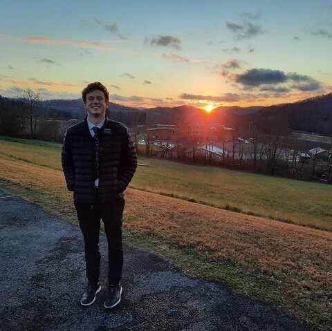

About me
Hi I'm Miles
I am from Farmington Utah and come from family of six. My life has been full of awesome experience. As a boy I really like sports and I especially enjoyed Football. Football thought me a lot about life especially How to work hard. I learn many things like how to work as a team and the time and effort you need to put into something to be the best. In the off season I spent time doing some coustodial and learned about cleaning and landscaping.


After High school I choose to Leave for 2 years and serve a mission for the church of Jesus Christ of Latter-day Saints in the Sate of west virgina. This experience taught me a lot of new things. I learn how to be a good public speaker and how to manage my time well. I also had the previllage of teaching new missionaries and helping them become good teachers and examples to others around them. I have no since returned from my mission. I now am attending the Unisverity of BYU idaho as a student.